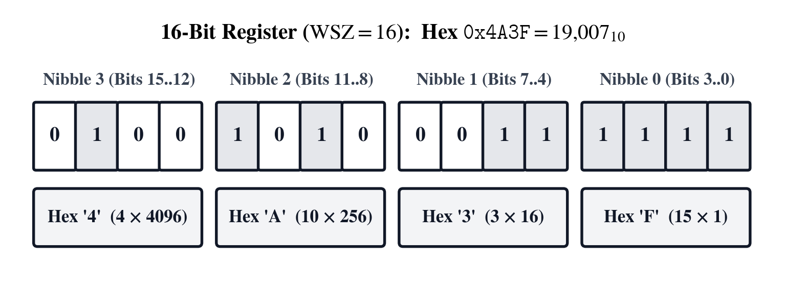
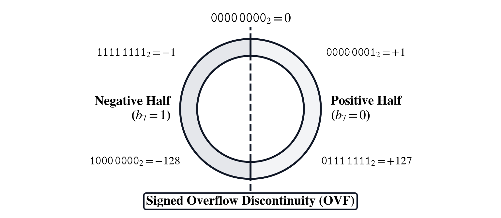
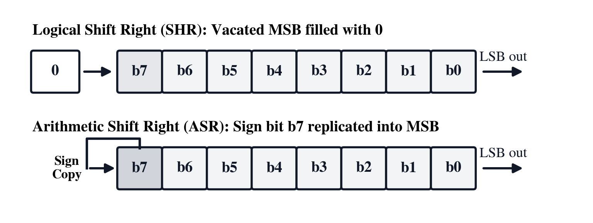
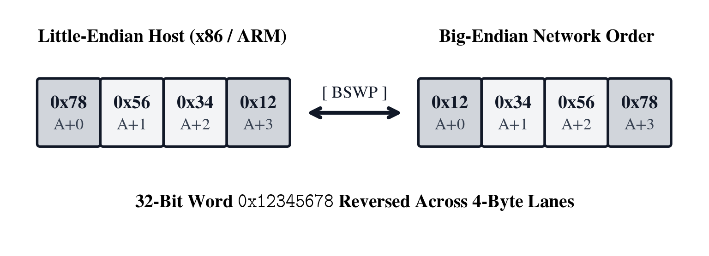
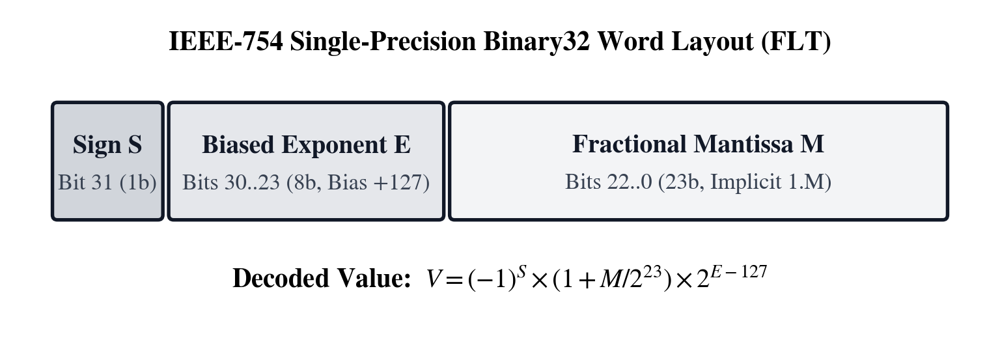
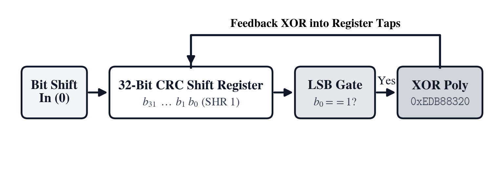
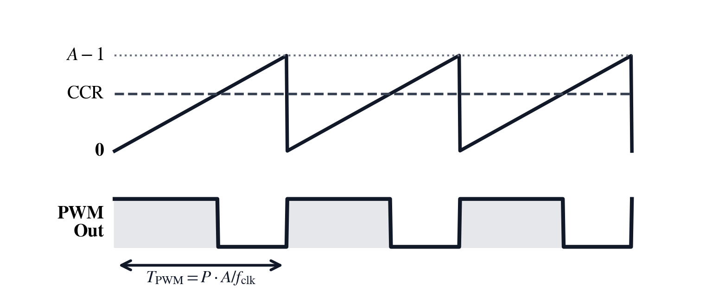
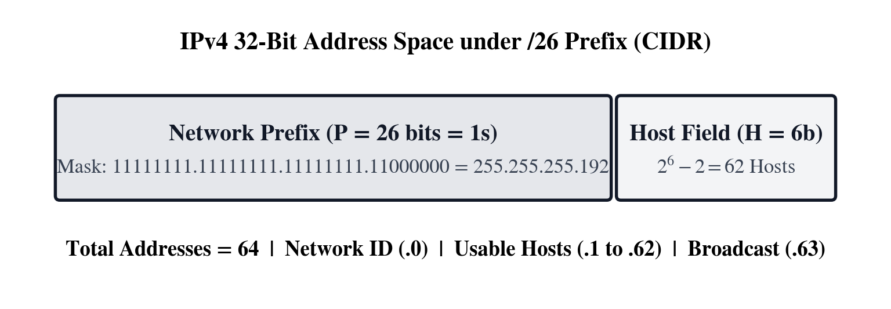
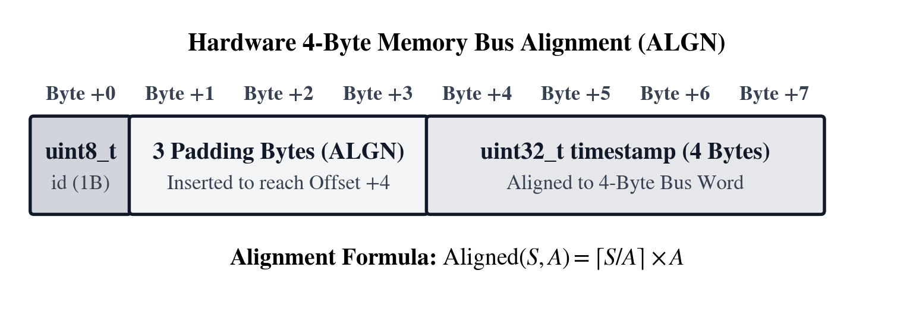

Unit III: Digital Systems, Bitwise Logic & Embedded Timing
In 1703, Gottfried Wilhelm Leibniz published Explication de l'Arithmétique Binaire in the Mémoires de l'Académie Royale des Sciences, demonstrating that every integer can be represented using only the two figures 0 and 1 through successive powers of two. More than two centuries later, in his 1937 master's thesis at the Massachusetts Institute of Technology (A Symbolic Analysis of Relay and Switching Circuits), twenty-one-year-old Claude Shannon proved that George Boole's 1854 algebra of logical propositions maps one-to-one onto physical electrical switches wired in series ([&]), in parallel ([|]), and through inverting relays ([g] [~]). When John von Neumann, Arthur Burks, and Herman Goldstine drafted their 1945–1946 reports on the EDVAC and the Institute for Advanced Study computer, they united Leibniz's base-2 positional notation with Shannon's switching gates and standardized two's complement binary arithmetic ([f] [NEG]) across fixed-width hardware registers.
In pure mathematics, the set of integers \(\mathbb{Z}\) extends without bound in both directions and the continuum of real numbers \(\mathbb{R}\) is infinitely dense between any two points; an algebraist never asks how many bits wide an equation is, whether shifting a number right preserves its sign, or whether a variable's memory address is divisible by sixteen. Inside a physical microprocessor, an operating-system kernel, a cryptographic engine, or a network router, every number lives inside a hardware register built from a fixed number \(W\) of bistable transistor flip-flops, each holding a low voltage (0) or a high voltage (1) across standard Word Sizes ([g] [WSZ]) of \(W \in \{8, 16, 32, 64\}\) bits. Because a \(W\)-bit register has \(2^W\) states, hardware integer arithmetic operates over the finite modular ring \(\mathbb{Z} / 2^W \mathbb{Z}\): just as a five-digit mechanical odometer wraps from 99999 to 00000, an 8-bit unsigned register ([g] [UNS]) holding 1111 1111 (\(255\)) wraps to 0000 0000 (\(0\)) when incremented by \(1\), and a 16-bit signed register incremented past \(+32{,}767\) (0x7FFF) wraps into \(-32{,}768\) (0x8000), asserting hardware Signed Arithmetic Overflow ([g] [OVF]).
In the decades following von Neumann's architecture, Richard Hamming (1950) formalized bit-level Hamming weight ([f] [#B]), William Wesley Peterson (1961) introduced Galois-field polynomial Cyclic Redundancy Checks ([f] [CRC]), and William Kahan (1985) led the standardization of IEEE 754 floating-point representation ([FLT], [f] [F16], [g] [F64]). The SC-16 Systems Programming, Embedded & Cyber Operations instrument brings these hardware laws together through a three-pillar architecture:
1. Configurable Stack Depth (4-LV, 8-LV, or Deep Stack): Engineers can work in classic four-register \((X, Y, Z, T)\) RPN discipline, toggle an eight-register stack (8-LV), or enable deep stack capacity so complex register pipelines never encounter an artificial register ceiling.
2. Dual-Mode Domain Keys (Quick-Access RPN Stack Shortcuts + Bidirectional Equation Solver Workspaces): Pressing a domain key with arguments already on the stack executes the forward calculation in a single keystroke—embedding standard reference voltages (\(V_{\text{ref}} = 3.3\text{ V}\)), word masks, and binary/clock unit conversions ([f] [▸KiB], [g] [▸MiB], [f] [▸GiB], [g] [▸TiB], [f] [▸MHz], [g] [▸GHz], [f] [▸cyc], [g] [▸ns], [f] [▸ms], [g] [▸μs], [f] [▸B], [g] [▸bit]). Opening the key's Bidirectional Equation Solver Workspace ([g] [SOLVE] / [XEQ]) displays the governing identity on Line 1 (F = C / (P × A) for [PWM], T = R × C for [f] [τ], D = V / R × 2^N for [f] [ADC]) and binds the six softkeys ([LFU0]–[LFU5]) to its variables so knowns can be stored in any order and solved forward or backward for any unknown variable.
3. Domain Modes, Hex Softkeys, & Live Reference Ledgers ([g] [▦]): Selectable hardware word sizes ([g] [WSZ]: \(8, 16, 32, 64\text{-bit}\)), live multi-radix rendering ([HEX], [f] [DEC], [f] [OCT], [g] [BIN]) where activating [HEX] binds the top-row softkeys [LFU0]–[LFU5] directly to hexadecimal digits [A]–[F], and the non-destructive [g] [▦] systems reference ledger.
Across the three narrative chapters of this Unit, we trace the SC-16 from debugging a runaway robotic motor controller register, to unpacking a corrupted big-endian serial telemetry packet and synthesizing CIDR subnet masks and UART clock dividers, to configuring timer PWM carriers, sizing a 12-bit vibration sensor RC anti-aliasing and ADC front end, and aligning DMA memory buffers:
| Chapter | Narrative Problem | Mathematical Concepts | Buttons Mastered |
|---|---|---|---|
| Chapter 7 | Debugging a 16/32-bit motor controller timer register where an unmasked bitfield and a logical-vs-arithmetic shift bug corrupt signed velocity commands, then inspecting IEEE-754 and \(Q_{m.n}\) fixed-point words | Positional radix compression, \(\mathbb{Z}/2^W\mathbb{Z}\) two's complement rings, Boolean masking, bit set/clear/test primitives, logical vs. arithmetic shifts, IEEE-754 floats, and \(Q_{m.n}\) fixed-point | [HEX], [f] [DEC], [f] [OCT], [g] [BIN], [g] [WSZ], [f] [NEG], [&], [ |
| Chapter 8 | Unpacking a big-endian 4-byte telemetry packet into an IEEE 754 float, verifying its CRC checksum, partitioning CIDR subnets, and solving UART baud dividers | Little/Big-Endian byte swaps, IEEE 754 binary32 bitfields, \(\text{GF}(2)\) CRC8/CCITT & CRC-32 polynomial division, CIDR host/netmask synthesis, and \(16\times\) UART divisors |
[g] [SWP], [FLT], [f] [CRC], [NET], [g] [BPS], [g] [MOD], [f] [÷R], [f] [▸MHz], [g] [▸GHz], [f] [▸cyc], [g] [▸ns], [f] [▸ms], [g] [▸μs] |
| Chapter 9 | Synthesizing timer PWM carriers, sizing an RC anti-aliasing filter and 12-bit ADC front end for a \(3.3\text{ V}\) vibration sensor, and aligning DMA ring buffers | Timer [PWM] prescalers (F = C / (P × A)), RC settling time constants (\(\tau = RC\), \(f_c = 1/(2\pi RC)\)), uniform \(2^N\) ADC quantization, Hamming weight ([f] [#B]), leading zeros ([g] [CLZ]), and memory alignment ([g] [ALN]) |
[PWM], [f] [ADC], [g] [DAC], [f] [τ], [f] [#B], [g] [CLZ], [g] [2ˣ], [lg], [NET], [g] [ALN], [f] [▸B], [g] [▸bit], [f] [▸KiB], [g] [▸MiB], [f] [▸GiB], [g] [▸TiB], [g] [▦] |
Chapter 7: The Stuck Interrupt Flag in the Motor Controller
On a robotics test bench, an embedded firmware engineer is bringing up a 32-bit ARM Cortex-M microcontroller that drives a precision linear actuator. Two baffling bugs appear during closed-loop testing. First, when the initialization routine attempts to write a 4-bit clock-divider setting of 10 (0xA) into bits [11:8] of the 32-bit Timer Control Register (initially holding 0x00240505), the interrupt-enable flag at bit \(0\) stays stuck and the old prescaler bits in [11:8] corrupt the new setting because the developer used a raw bitwise [|] without first masking and clearing the target bitfield ([f] [MSK], [g] [~], [&], [≪], [|]).
Second, whenever the optical encoder commands a slow reverse jog of \(V = -16\text{ counts/tick}\) inside a 16-bit signed velocity loop ([g] [WSZ] \(= 16\), where \(-16\) is stored in two's complement as 0xFFF0), the proportional damping filter divides the velocity by \(4\) using a 2-bit Logical Shift Right ([≫]) instead of a sign-preserving Arithmetic Shift Right ([f] [ASR]). Zero-filling the top two bits turns 0xFFF0 (\(-16\)) into 0x3FFC (\(+16{,}380\)), slamming the actuator forward at full saturation. To squash both bugs at the register transfer level, the engineer must translate between binary nibbles and hexadecimal words ([HEX], [g] [BIN], [f] [OCT], [f] [DEC]—using the top-row softkeys [LFU0]–[LFU5] as hex digits [A]–[F] in [HEX] mode), verify 16-bit two's complement negation ([g] [WSZ], [f] [NEG]), construct a surgical 4-bit clear-and-merge bitmask for bits [11:8] ([f] [MSK], [&], [|], [⊕], [g] [~], [f] [~&], [f] [~|]), compare [≫], [f] [ASR], and [g] [ROR] across signed and unsigned words, and verify IEEE-754 float bit patterns ([FLT]) and \(Q_{m.n}\) fixed-point filter gains ([f] [Q.n], [g] [FXP]).
Positional Radix Compression and Fixed-Width Two's Complement Rings
At the register transfer level, every value stored in memory or across an internal CPU bus is a sequence of \(W\) bits that can be viewed in any positional radix and interpreted as an unsigned magnitude or a signed two's complement integer.
Binary Nibbles, Octal Triads, and Hexadecimal Register Notation
In any positional number system of integer radix \(b \ge 2\)—where \(b = 16\) for Hexadecimal ([HEX]), \(b = 10\) for Decimal ([f] [DEC]), \(b = 8\) for Octal ([f] [OCT]), and \(b = 2\) for Binary ([g] [BIN])—a \(k\)-digit word \((d_{k-1} d_{k-2} \dots d_1 d_0)_b\) with digits \(d_i \in \{0, 1, \dots, b-1\}\) represents the scalar integer \(V\) obtained by summing each digit weighted by its positional power \(b^i\). When [HEX] mode is active on the SC-16, the six top-row softkeys [LFU0]–[LFU5] automatically bind to the hexadecimal digits [A], [B], [C], [D], [E], and [F] for rapid single-keystroke entry of 16-, 32-, and 64-bit register words. Because \(16 = 2^4\), partitioning a binary string into blocks of four bits (nibbles) from the least significant bit (\(i = 0\)) upward maps each 4-bit block \((b_{4m+3} b_{4m+2} b_{4m+1} b_{4m})_2\) with internal weights \((8, 4, 2, 1)\) onto a single hexadecimal digit \(H_m \in [0, 15]\) (0–9, [A]–[F]), while \(8 = 2^3\) maps each 3-bit triad onto a single octal digit (0–7):
In this radix decomposition, each hexadecimal digit \(H_m\) summarizes four adjacent transistor states without cross-boundary carry arithmetic:
| Hex ([HEX]) | Binary Nibble ([g] [BIN]) | Decimal ([f] [DEC]) | Octal ([f] [OCT]) | Hex ([HEX]) | Binary Nibble ([g] [BIN]) | Decimal ([f] [DEC]) | Octal ([f] [OCT]) |
|---|---|---|---|---|---|---|---|
0 |
0000 |
\(0\) | 00 |
8 |
1000 |
\(8\) | 10 |
1 |
0001 |
\(1\) | 01 |
9 |
1001 |
\(9\) | 11 |
2 |
0010 |
\(2\) | 02 |
[A] ([LFU0]) | 1010 |
\(10\) | 12 |
3 |
0011 |
\(3\) | 03 |
[B] ([LFU1]) | 1011 |
\(11\) | 13 |
4 |
0100 |
\(4\) | 04 |
[C] ([LFU2]) | 1100 |
\(12\) | 14 |
5 |
0101 |
\(5\) | 05 |
[D] ([LFU3]) | 1101 |
\(13\) | 15 |
6 |
0110 |
\(6\) | 06 |
[E] ([LFU4]) | 1110 |
\(14\) | 16 |
7 |
0111 |
\(7\) | 07 |
[F] ([LFU5]) | 1111 |
\(15\) | 17 |

To translate a 16-bit hexadecimal register snapshot 0x4A3F into binary ([g] [BIN]) and decimal ([f] [DEC]), each hex digit expands into its 4-bit nibble under the \((8, 4, 2, 1)\) weights—4 \(= 0100_2\), A (\(10 = 8+2\)) \(= 1010_2\), 3 (\(2+1\)) \(= 0011_2\), and F (\(8+4+2+1\)) \(= 1111_2\)—giving 0100 1010 0011 1111, while summing the powers of \(16\) gives \(V = 4(16^3) + 10(16^2) + 3(16^1) + 15(16^0) = 16{,}384 + 2{,}560 + 48 + 15 = \mathbf{19{,}007}\).
Modular Integer Rings, Two's Complement Negation, and Signed Overflow
In a fixed \(W\)-bit register ([g] [WSZ]), an Unsigned Integer ([g] [UNS]) assigns positive weight \(+2^i\) to every bit \(b_i\) from \(i = 0\) through \(W - 1\). To encode negative numbers without building separate subtraction circuitry, digital processors use Two's Complement ([f] [NEG]) representation, in which the most significant bit \(b_{W-1}\) carries negative weight \(-2^{W-1}\) while the lower \(W - 1\) bits retain positive weights \(+2^i\):
Because adding any \(W\)-bit word \(X\) to its bitwise one's complement \(\sim X\) ([g] [~], where every 0 flips to 1 and every 1 flips to 0) produces a word of \(W\) ones equal to \(2^W - 1\), adding \(1\) yields \(X + ((\sim X) + 1) = 2^W \equiv 0 \pmod{2^W}\). Consequently, the additive inverse \(-X\) in \(W\)-bit two's complement ([f] [NEG]) is formed by inverting all \(W\) bits and adding \(1\):

Because zero (0x00) consumes one of the \(2^{W-1}\) non-negative bit patterns, every signed \(W\)-bit two's complement range is asymmetric by one count, extending from \(-2^{W-1}\) (0x80...0) to \(+2^{W-1} - 1\) (0x7F...F):
| Word Size ([g] [WSZ]) | Bits \(W\) | Unsigned Range ([g] [UNS]: \(0\) to \(2^W - 1\)) | Signed Two's Complement Range (\(-2^{W-1}\) to \(+2^{W-1}-1\)) |
|---|---|---|---|
| Byte | \(8\) | \(0\) to \(255\) (0xFF) |
\(-128\) (0x80) to \(+127\) (0x7F) |
| Halfword / Word | \(16\) | \(0\) to \(65{,}535\) (0xFFFF) |
\(-32{,}768\) (0x8000) to \(+32{,}767\) (0x7FFF) |
| Word / DWord | \(32\) | \(0\) to \(4{,}294{,}967{,}295\) (0xFFFFFFFF) |
\(-2{,}147{,}483{,}648\) (0x80000000) to \(+2{,}147{,}483{,}647\) (0x7FFFFFFF) |
| Quadword | \(64\) | \(0\) to \(1.84467 \times 10^{19}\) | \(-9.22337 \times 10^{18}\) to \(+9.22337 \times 10^{18}\) |
In our motor controller's 16-bit velocity register ([g] [WSZ] \(= 16\)), \(+16\) is 0x0010 (0000 0000 0001 0000); inverting all 16 bits gives 0xFFEF and adding \(1\) via [f] [NEG] yields \(-16 \equiv \mathbf{\text{0xFFF0}}\) (\(65{,}520\) unsigned). Similarly, in 8-bit mode ([g] [WSZ] \(= 8\)), \(-42\) is formed from \(+42 = \text{0x2A}\) (0010 1010) via \(\sim\text{0x2A} + 1 = \text{0xD5} + 1 = \mathbf{\text{0xD6}}\) (\(214\) unsigned). When two \(W\)-bit words \(A\) and \(B\) sum to \(S = (A + B) \bmod 2^W\), Signed Arithmetic Overflow ([g] [OVF]) occurs if and only if two operands of the same sign bit (\(A_{W-1} = B_{W-1}\)) produce a sum of the opposite sign bit (\(S_{W-1} \ne A_{W-1}\)):
Here \(A_{W-1}, B_{W-1},\) and \(S_{W-1}\) are the sign bits of the two addends and their modular sum. In 8-bit signed arithmetic (\([-128, +127]\)), adding \(+100\) (0x64) and \(+50\) (0x32) produces 0x96; because two positive operands (\(A_7 = B_7 = 0\)) yielded \(S_7 = 1\), the processor asserts [g] [OVF] (1) as \(+150\) wraps across \(+127 / -128\) to \(150 - 256 = \mathbf{-106}\).
Bitwise Boolean Masking, Shifts, and Fixed/Floating-Point Encoding
Manipulating packed peripheral control registers without disturbing adjacent interrupt flags requires combining Boolean truth tables with contiguous bitfield mask generators, distinguishing logical zero-fill shifts from arithmetic sign-extending shifts, and converting between IEEE-754 floating-point bit patterns ([FLT]) and \(Q_{m.n}\) fixed-point integers ([f] [Q.n], [g] [FXP]).
Boolean Logic Gates and Peripheral Control Register Masking
Bitwise operators apply Boolean logic gates in parallel across each bit index \(i \in \{0, \dots, W-1\}\) of two \(W\)-bit words \(Y\) and \(X\):
| Bit \(Y_i\) | Bit \(X_i\) | [&] (\(Y_i \& X_i\)) | [|] (\(Y_i \mid X_i\)) | [⊕] (\(Y_i \oplus X_i\)) | [g] [~] (\(\sim X_i\)) | [f] [~&] \(\sim(Y_i \& X_i)\) | [f] [~|] \(\sim(Y_i \mid X_i)\) |
| :---: | :---: | :---: | :---: | :---: | :---: | :---: | :---: |
| 0 | 0 | 0 | 0 | 0 | 1 | 1 | 1 |
| 0 | 1 | 0 | 1 | 1 | 0 | 1 | 0 |
| 1 | 0 | 0 | 1 | 1 | — | 1 | 0 |
| 1 | 1 | 1 | 1 | 0 | — | 0 | 0 |
To isolate or modify a multi-bit hardware field of width \(w\) bits starting at bit offset \(s\), the Bitfield Mask Generator ([f] [MSK]) shifts \(2^w - 1\) (\(w\) contiguous 1 bits) left by \(s\) positions:
In this read-modify-write identity, \(R\) is the initial control register value, \(\text{MSK}(s, w)\) is the positive mask covering bits \([s+w-1 : s]\), \(\sim\text{MSK}(s, w)\) is the inverted clear mask with 0s across the target field and 1s everywhere else, and \(V_{\text{field}} \ll s\) aligns the new setting into position. For our motor controller's 4-bit clock-divider field (\(w = 4\)) at bit offset \(s = 8\) (bits [11:8]), the mask is \(\text{MSK}(8, 4) = ((1 \ll 4) - 1) \ll 8 = 15 \times 256 = \mathbf{\text{0x0F00}}\) (\(3{,}840\)). Clearing bits [11:8] of 0x00240505 with \(\sim\text{0x0F00}\) leaves 0x00240005, and merging 0xA shifted left by \(8\) (0x0A00) via [|] yields 0x00240A05 (or \(\mathbf{\text{0xA05}}\) on the low 16-bit halfword).
Logical Shifts, Sign-Preserving Arithmetic Shifts, Rotations, and Fixed-Point Scaling
Shifting a binary word \(Y\) left or right by \(k\) bit positions scales the integer by \(2^k\), where the fill rule for the vacated bits distinguishes unsigned magnitudes from signed two's complement velocities:

Here Logical Shift Left ([≪]) shifts bits toward the most significant end and fills vacated low bits with 0; Logical Shift Right ([≫]) shifts toward the least significant end and fills vacated high bits with 0 (dividing an unsigned word by \(2^k\)); Arithmetic Shift Right ([f] [ASR]) shifts right while replicating the original sign bit \(b_{W-1}\) into all vacated high bits to preserve two's complement sign; Circular Rotate ([g] [ROR]) rotates bits across the \(W\)-bit word; and single-bit manipulation keys Bit Set ([f] [SB], \(Y \mid (1 \ll X)\)), Bit Clear ([f] [CB], \(Y \& \sim(1 \ll X)\)), and Bit Test ([g] [B?], \((Y \ggg X) \& 1\)) operate directly on individual flag bits. Furthermore, on the SC-16:
- Bidirectional IEEE-754 Single-Precision (binary32) Conversion ([FLT]): When Register \(X\) holds a 32-bit integer bit pattern (>= 0x00800000, such as 0x41480000 \(= 1{,}095{,}237{,}632\)), pressing [FLT] decodes it into its floating-point value (\(\mathbf{12.5}\)); when Register \(X\) holds a floating-point value such as 12.5, pressing [FLT] encodes it into its IEEE-754 32-bit integer pattern (1095237632 \(= \mathbf{\text{0x41480000}}\)).
- Fixed-Point \(Q_{m.n}\) Encode ([f] [Q.n]) & Decode ([g] [FXP]): With a floating-point number in Register \(Y\) and fractional bit count \(n\) in Register \(X\), pressing [f] [Q.n] converts to the rounded \(Q\)-format integer \(\operatorname{round}(Y \cdot 2^X)\) (e.g., 0.75 [ENTER] 15 [f] [Q.n] \(\to \mathbf{24{,}576} = \text{0x6000}\)), while pressing [g] [FXP] converts a \(Q\)-format integer in Register \(Y\) with fractional bits \(n\) in Register \(X\) back to its real floating-point value \(Y / 2^X\).
Debugging the Motor Controller Register and Velocity Shift on the Stack
The SC-16 brings multi-radix display switching ([HEX], [f] [DEC], [f] [OCT], [g] [BIN]), configurable hardware word widths ([g] [WSZ]: \(8, 16, 32, 64\text{-bit}\)), two's complement negation ([f] [NEG]), Boolean logic gates ([&], [|], [⊕], [g] [~], [f] [~&], [f] [~|]), single-bit and contiguous bitfield manipulators ([f] [SB], [f] [CB], [g] [B?], [f] [MSK]), logical/arithmetic shifts ([≪], [≫], [f] [ASR], [g] [ROR]), and IEEE-754 / \(Q_{m.n}\) converters ([FLT], [f] [Q.n], [g] [FXP]) together on the RPN stack:
| Button | Operation | Register Z | Register Y | Register X | Governing Expression |
|---|---|---|---|---|---|
| [HEX] [f] [DEC] [f] [OCT] [g] [BIN] | Active Radix Selection | — | — | Value \(X\) | Displays stack in base \(b \in \{16, 10, 8, 2\}\) ([LFU0]–[LFU5] = [A]–[F] in [HEX]) |
| [g] [WSZ] / [g] [UNS] / [g] [OVF] | Word Width, Unsigned & Overflow | — | — | Width \(W\) / Word \(X\) | Masks modulo \(2^W\) (\(W \in \{8,16,32,64\}\)), unsigned cast, signed overflow check |
| [f] [NEG] | Two's Complement Negation | — | — | Word \(X\) | \(-X \equiv (\sim X + 1) \bmod 2^W\) |
| [&] [ | ] [⊕] [f] [~&] [f] [~ | ] | Binary Bitwise Logic | — | Word \(Y\) |
| [g] [~] | One's Complement Inversion | — | — | Word \(X\) | \((\sim X) \bmod 2^W\) |
| [f] [SB] [f] [CB] [g] [B?] | Single-Bit Set / Clear / Test | — | Word \(Y\) | Bit index \(k\) | \(Y \mid 2^k,\; Y \& \sim 2^k,\; (Y \ggg k) \& 1\) |
| [f] [MSK] | Contiguous Bitfield Mask | — | Offset \(s\) | Width \(w\) | \(\text{MSK}(s, w) = ((1 \ll w) - 1) \ll s\) |
| [≪] [≫] [f] [ASR] [g] [ROR] | Bitwise Shifts & Rotation | — | Word \(Y\) | Count \(k\) | \(Y \ll k,\; Y \ggg k\) (zero-fill), \(Y \gg k\) (sign-fill), circular rotate |
| [FLT] / [f] [Q.n] / [g] [FXP] | IEEE-754 & \(Q_{m.n}\) Fixed-Point | — | Value \(Y\) | Word \(X\) or Bits \(n\) | 0x41480000 \(\leftrightarrow 12.5\) ([FLT]); \(\operatorname{round}(Y\cdot 2^X)\) ([f] [Q.n]); \(Y/2^X\) ([g] [FXP]) |
Masking and Merging the Timer Control Field in Hexadecimal
To configure the 4-bit clock divider at bits [11:8] (\(s = 8, w = 4\)) with 0xA (\(10_{10}\), entered via softkey [A] on [LFU0]) on a control register holding 0x0005, the engineer switches to [HEX], generates 8 [ENTER] 4 [f] [MSK] (\(\mathbf{\text{0xF00}}\)), shifts [A] left by \(8\) bits via [A] [ENTER] 8 [≪] (\(\mathbf{\text{0xA00}}\)), and merges with 5 via [|] to obtain \(\mathbf{\text{0xA05}}\):
| Keystroke | Register T | Register Z | Register Y | Register X | What Happens on the Stack |
|---|---|---|---|---|---|
[HEX] 8 [ENTER] 4 [f] [MSK] |
\(0\) | \(0\) | \(0\) | \(\text{0xF00}\) | Generate 4-bit mask at bit offset \(8\) (\(\text{MSK}(8,4) = \text{0x0F00}\)) |
5 [ENTER] |
\(0\) | \(0\) | \(\text{0xF00}\) | \(\text{0x5}\) | Stage initial control register value 0x0005 |
[A] [ENTER] 8 [≪] |
\(0\) | \(\text{0xF00}\) | \(\text{0x5}\) | \(\text{0xA00}\) | Shift hex digit [A] ([LFU0]) left by \(8\) bits to 0x0A00 |
| [ | ] | \(0\) | \(0\) | \(\text{0xF00}\) | \(\text{0xA05}\) |
When extracting bits [11:8] in the inverse direction from a returned status word 0x002405A0 at peripheral address 0x40013800 + 0x1C = 0x4001381C, keying [HEX] 2405 [A] 0 [ENTER] 8 [ENTER] 4 [f] [MSK] [&] 8 [≫] masks 0x0500 and shifts it down to \(\mathbf{\text{0x5}}\).
Fixing the Signed Velocity Right Shift in Sixteen-Bit Mode
Next, setting the word width to 16 bits ([HEX] 10 [g] [WSZ], since 0x10 \(= 16_{10}\)) and negating +16 (0x10) with [f] [NEG] produces 0xFFF0 (\(-16\)). Executing 2 [f] [ASR] preserves the sign bit to give \(\mathbf{\text{0xFFFC}}\) (\(-4\)), whereas 2 [≫] reproduces the runaway positive value \(\mathbf{\text{0x3FFC}}\) (\(+16{,}380\)):
| Keystroke | Register T | Register Z | Register Y | Register X | What Happens on the Stack |
|---|---|---|---|---|---|
[HEX] 10 [g] [WSZ] |
\(0\) | \(0\) | \(0\) | \(\text{0x10}\) | Set active word width to \(16\) bits (0x10 \(= 16_{10}\)) |
10 [f] [NEG] |
\(0\) | \(0\) | \(0\) | \(\text{0xFFF0}\) | Negate 0x0010 (\(+16\)) to 16-bit two's complement 0xFFF0 (\(-16\)) |
[ENTER] 2 [f] [ASR] |
\(0\) | \(0\) | \(\text{0xFFF0}\) | \(\text{0xFFFC}\) | Arithmetic right shift by \(2\) bits preserves sign (0xFFFC \(= -4\)) |
[F] [F] [F] 0 [ENTER] 2 [≫] |
\(0\) | \(\text{0xFFF0}\) | \(\text{0xFFFC}\) | \(\text{0x3FFC}\) | Logical right shift by \(2\) bits zero-fills high bits (0x3FFC \(= +16{,}380\)) |
Try It on the Stack
Practice register masking, two's complement negation, and IEEE-754 / \(Q_{m.n}\) conversion with these three firmware debugging exercises:
- Peripheral Control Register Field Modification: A 32-bit SPI control register holds
0x00000301. Using [f] [MSK], [g] [~], [&], [≪], and [|] in [HEX] mode, clear the 3-bit baud-rate field at bits[5:3](shift \(s = 3\), width \(w = 3\)) and insert the new setting0x5(\(5_{10}\)) into bits[5:3]. (Verified Register \(X\) results: mask \(\text{MSK}(3,3) = \mathbf{\text{0x38}}\), cleared register \(\mathbf{\text{0x301}}\), shifted setting \(5 \ll 3 = \mathbf{\text{0x28}}\), and final merged register \(\mathbf{\text{0x329}}\).) - Sixteen-Bit Signed Sensor Delta Division and Bit Set/Clear: A 16-bit encoder delta equals \(\Delta = -36\) (
+36 = 0x0024). Key [f] [DEC]16[g] [WSZ] [HEX]24[f] [NEG] to find its 16-bit two's complement hex word and2[f] [ASR] to divide by \(4\) with sign extension; then in 8-bit mode ([f] [DEC]8[g] [WSZ] [HEX]), set bit 7 of0x5A(5[A] [ENTER]7[f] [SB]), clear bit 1 (1[f] [CB]), and test bit 3 (3[g] [B?]). (Verified Register \(X\) results: \(-36 \equiv \mathbf{\text{0xFFDC}}\), \(-36 \gg 2 = -9 \equiv \mathbf{\text{0xFFF7}}\), [f] [SB] \(= \mathbf{\text{0xDA}}\), [f] [CB] \(= \mathbf{\text{0xD8}}\), and [g] [B?] \(= \mathbf{\text{0x1}}\).) - Bidirectional IEEE-754 Float and Fixed-Point \(Q_{15}\) Round-Trip: In [f] [DEC] mode, encode
12.5into its 32-bit IEEE-754 integer pattern (12.5[FLT] \(\to \mathbf{1{,}095{,}237{,}632} = \text{0x41480000}\)) and press [FLT] again to decode back to \(\mathbf{12.5}\); then encode0.75into \(Q_{15}\) (0.75[ENTER]15[f] [Q.n] \(\to \mathbf{24{,}576}\)) and decode back via15[g] [FXP] (\(\to \mathbf{0.75}\)).
With the internal control register and velocity loop operating as designed, we trace the actuator's serial telemetry link and industrial network subnet across the system bus in Chapter 8.
Chapter 8: The Corrupt Sensor Packet Across the Serial Bus
Once the linear actuator is running, the microcontroller streams 4-byte temperature and current telemetry packets over an RS-485 serial bus at \(115{,}200\text{ bits/s}\) ([g] [BPS]) to a Little-Endian ARM monitoring gateway connected to an isolated /24 (255.255.255.0) industrial Ethernet VLAN ([NET]). On the monitoring console, however, a normal heatsink temperature reading of \(+12.25^\circ\text{C}\) (and \(+12.50^\circ\text{C}\) on Channel 2) suddenly displays as \(6.02 \times 10^{-39}\text{ }^\circ\text{C}\), and one out of every thousand frames fails its Cyclic Redundancy Check ([f] [CRC]).
Inspecting the raw serial capture on a logic analyzer reveals three layers of embedded systems and network physics at work. First, the sensor node transmitted the 32-bit IEEE 754 floating-point word 0x41440000 in Big-Endian Network Byte Order (41 44 00 00), but the Little-Endian host CPU read the four bytes backward as 0x00004441 without executing an Endian Byte Swap ([g] [SWP]) before decoding the IEEE 754 Single-Precision Float ([FLT]). Second, verifying packet integrity requires evaluating the polynomial remainder via [f] [CRC] (supporting CRC8/CCITT with polynomial 0x07 and IEEE 802.3 32-bit frame verification). Third, auditing the gateway's CIDR subnet mask and host capacity (24 [NET] \(\to Y = \text{0xFFFFFF00} = 4{,}294{,}967{,}040\) netmask and \(X = 254\) usable hosts) alongside the \(16\times\) oversampled UART baud divisor ([g] [BPS]) shows how integer rounding in the baud divisor shifts the actual serial rate to \(115{,}384.6\text{ bps}\) (\(+0.16\%\) clock error).
Network Byte Order, Floating-Point Bitfields, and Galois-Field Checksums
Transmitting fractional measurements reliably across heterogeneous processors requires reconciling byte endianness, unpacking sign-exponent-mantissa bitfields, and computing polynomial division remainders over \(\text{GF}(2)\).
Endian Byte Swapping and Single-Precision Floating-Point Encoding
When multi-byte words cross between x86 or ARM processors—which store the least significant byte at the lowest memory address in Little-Endian order—and network or industrial fieldbus protocols in Big-Endian (Network Byte Order, most significant byte first), Byte-Order Endian Swap ([g] [SWP]) reverses the four octets of a 32-bit word (or the two bytes of a 16-bit halfword):

Once the 32-bit word is in native host order, the IEEE 754 Single-Precision (binary32) standard ([FLT], alongside half-precision [f] [F16] and double-precision [g] [F64]) partitions bits [31:0] into a 1-bit sign \(S \in \{0, 1\}\) at bit 31, an 8-bit unsigned biased exponent \(E \in [1, 254]\) at bits [30:23] (with bias \(127\), so the true binary exponent is \(e = E - 127\)), and a 23-bit fractional mantissa \(M \in [0, 2^{23}-1]\) at bits [22:0] with an implicit leading \(1\) before the binary point. On microcontrollers without floating-point hardware, \(Q_{m.n}\) Fixed-Point Scaling ([f] [Q.n] and [g] [FXP]) instead converts between a real value \(V_{\text{real}}\) and an integer \(Q_{\text{int}}\) scaled by \(2^n\):

In the byte-swapped 32-bit telemetry word 0x41440000 (0100 0001 0100 0100 0000 0000 0000 0000), sign bit \(S = 0\) indicates a positive value, biased exponent \(E = \text{1000 0010}_2 = 130\) gives true exponent \(e = 130 - 127 = +3\), and the fractional mantissa bits .1000100..._2 evaluate to \(2^{-1} + 2^{-5} = 0.5 + 0.03125 = 0.53125\), yielding \(V_{\text{float}} = +1.53125 \times 2^3 = \mathbf{+12.25^\circ\text{C}}\) (while 0x41480000 \(= 1{,}095{,}237{,}632\) decodes via [FLT] to \(+1.5625 \times 2^3 = \mathbf{+12.50^\circ\text{C}}\), and pressing [FLT] on 12.5 encodes back to 1095237632 \(= \text{0x41480000}\)).
Polynomial Division over Galois Field Two and Cyclic Redundancy Checks
To detect burst noise on serial sensor buses and Ethernet links, a Cyclic Redundancy Check ([f] [CRC] at (2,2)f) treats a binary message frame as a polynomial over the two-element Galois field \(\text{GF}(2)\), where addition and subtraction are both carry-free [⊕] (\(\oplus\)), and computes the remainder modulo a generator polynomial:
- 8-Bit Sensor Bus CRC8/CCITT (\(G(x) = x^8 + x^2 + x + 1\), Polynomial 0x07): For compact 1-wire and RS-485 sensor headers, each bit shift tests the MSB (\(b_7\)) of the 8-bit accumulator and XORs with 0x07 when \(b_7 = 1\).
- 32-Bit Frame CRC-32 (\(G_{\text{ref}} = \text{0xEDB88320}\)): For IEEE 802.3 Ethernet and telemetry frames, starting from \(C_0 = \text{0xFFFFFFFF} \oplus X\), the reflected Linear Feedback Shift Register (LFSR) shifts right and XORs with 0xEDB88320 whenever the LSB is 1, followed by final bitwise inversion \(\sim C\):

CIDR Subnet Mask Synthesis and Asynchronous Serial Baud Divisors
Routing telemetry frames from the RS-485 gateway onto the plant Ethernet backbone requires synthesizing CIDR netmasks and host capacities ([NET]) and verifying that the \(16\times\) oversampled UART baud clock ([g] [BPS]) remains within framing tolerance.
CIDR Prefix Netmasks and Usable Host Counts
In Classless Inter-Domain Routing ([NET], primary at (2,2)), an IPv4 subnet prefix /P (\(P \in [0, 32]\)) assigns the upper \(P\) bits of a 32-bit IPv4 word to the network mask and leaves \(32 - P\) bits for host addresses. Pressing [NET] with prefix \(P\) in Register \(X\) evaluates both the 32-bit Netmask in Register \(Y\) and the Usable Host Count \(N_{\text{hosts}}\) in Register \(X\):
For a standard /24 industrial VLAN (24 [NET]), the 32-bit netmask pushed to Register \(Y\) is 4294967040 (\(\mathbf{\text{0xFFFFFF00}}\), or 255.255.255.0) and the usable host count in Register \(X\) is \(2^{32-24} - 2 = \mathbf{254\text{ hosts}}\) (excluding the .0 network address and .255 broadcast address).
Sixteen-Times Oversampled Asynchronous Serial Divisors and Clock Drift
Because a Universal Asynchronous Receiver/Transmitter ([g] [BPS] at (2,1)g) transmits data without a shared clock wire, the receiver oversamples the incoming line at \(16\) times the target symbol rate \(B\) (in \(\text{bits/s}\)) so it can align its sample point with the center (\(8\text{th}\) tick) of each bit cell. Dividing the peripheral clock \(f_{\text{clk}}\) (in Register \(Y\)) by \(16 \cdot B\) (\(B\) in Register \(X\)) and rounding to the nearest integer yields the hardware baud divisor \(D\):
Here \(D\) is the integer value written to the baud-rate register via [g] [BPS], \(B_{\text{actual}}\) is the synthesized bit rate, and \(\text{Err\%}\) is the fractional clock skew (which must remain within \(\pm 2.0\%\) over a 10-bit start-data-stop frame to prevent stop-bit framing errors). On our \(f_{\text{clk}} = 48\text{ MHz}\) bus targeting \(B = 115{,}200\text{ bps}\), keying 48000000 [ENTER] 115200 [g] [BPS] evaluates \(\frac{48{,}000{,}000}{16 \times 115{,}200} = 26.0417\) and rounds to \(D = \mathbf{26}\); the actual baud rate is \(\frac{48{,}000{,}000}{16 \times 26} \approx \mathbf{115{,}384.6\text{ bps}}\), a clock drift of \(+0.16\%\)—proving that the UART timing is well within tolerance and the CRC errors were caused by an un-terminated RS-485 bus end rather than baud-rate skew.
Unpacking the Telemetry Frame and Auditing Subnets and Clocks on the Stack
On the SC-16, [g] [SWP], [FLT], [f] [CRC], [NET], and [g] [BPS] evaluate 32-bit telemetry words, CIDR prefixes, and serial clock dividers directly on the RPN stack:
| Button | Operation | Register Z | Register Y | Register X | Governing Expression |
|---|---|---|---|---|---|
| [g] [SWP] | Endian Byte-Order Swap | — | — | Word \(X\) | Reverses byte order (B3..B0 \(\leftrightarrow\) B0..B3) across \(W\) bits |
| [FLT] / [f] [F16] / [g] [F64] | IEEE-754 Float Decode & Encode | — | — | Word or Float \(X\) | Decodes 0x41480000 \(\to 12.5\); encodes 12.5 \(\to 1{,}095{,}237{,}632\) (0x41480000) |
| [f] [CRC] | Cyclic Redundancy Check | — | — | Byte / Word \(X\) | Evaluates polynomial CRC remainder (CRC8/CCITT 0x07 / CRC-32) |
| [NET] | CIDR Subnet Mask & Usable Hosts | — | — | Prefix \(P\) | Pushes netmask \(2^{32}-2^{32-P}\) to \(Y\) and usable hosts \(2^{32-P}-2\) to \(X\) |
| [g] [BPS] | \(16\times\) UART Baud Divisor | — | Clock \(f_{\text{clk}}\) | Target Baud \(B\) | \(D = \operatorname{round}(f_{\text{clk}} / (16 \cdot B))\) |
| [f] [÷R] / [g] [MOD] / [g] [GCD] | Integer Quotient, Modulo & GCD | — | Dividend \(Y\) | Divisor \(X\) | Integer quotient & remainder ([f] [÷R]), \(Y \bmod X\) ([g] [MOD]), \(\gcd(Y, X)\) ([g] [GCD]) |
| [f] [▸MHz] [g] [▸GHz] [f] [▸cyc] [g] [▸ns] [f] [▸ms] [g] [▸μs] | Clock & Timing Conversions | — | — | Frequency / Time \(X\) | Converts between \(\text{Hz}\), \(\text{MHz}/\text{GHz}\), \(\text{ms}/\mu\text{s}/\text{ns}\), and CPU cycles |
Byte-Swapping the Telemetry Word, Decoding IEEE-754, and Checking CIDR and CRC
In 32-bit [HEX] mode ([f] [DEC] 32 [g] [WSZ] [HEX]), loading the mis-ordered Little-Endian capture 0x00004441 and pressing [g] [SWP] restores the Big-Endian word 0x41440000; pressing [FLT] decodes the true heatsink temperature \(\mathbf{+12.25^\circ\text{C}}\), keying 12.5 [FLT] encodes \(+12.5^\circ\text{C}\) to 1095237632 (\(\mathbf{\text{0x41480000}}\)), and keying 24 [NET] pushes netmask 4294967040 (0xFFFFFF00) to Register \(Y\) and \(\mathbf{254}\) usable hosts to Register \(X\):
| Keystroke | Register T | Register Z | Register Y | Register X | What Happens on the Stack |
|---|---|---|---|---|---|
[f] [DEC] 32 [g] [WSZ] [HEX] 4441 [g] [SWP] |
\(0\) | \(0\) | \(\text{0x20}\) | \(\text{0x41440000}\) | Byte-swap Little-Endian 0x00004441 into Big-Endian 0x41440000 |
| [FLT] | \(0\) | \(0\) | \(32\) | \(12.25\) | Decode IEEE 754 binary32 pattern 0x41440000 to \(+12.25\) |
[f] [DEC] 12.5 [FLT] |
\(0\) | \(32\) | \(12.25\) | \(1095237632\) | Encode float 12.5 into IEEE 754 bit pattern 1095237632 (0x41480000) |
24 [NET] |
\(32\) | \(12.25\) | \(4294967040\) | \(254\) | Compute /24 netmask in \(Y\) (0xFFFFFF00) and \(254\) usable hosts in \(X\) |
Auditing the Sixteen-Times Oversampled UART Baud Divisor on the Stack
Switching to [f] [DEC] mode, the engineer verifies the \(115{,}200\text{ bps}\) UART divisor on the \(48\text{ MHz}\) peripheral bus via 48000000 [ENTER] 115200 [g] [BPS] (\(\to D = \mathbf{26}\)) and computes the resulting \(+0.1603\%\) baud-rate drift:
| Keystroke | Register T | Register Z | Register Y | Register X | What Happens on the Stack |
|---|---|---|---|---|---|
[f] [DEC] 48000000 [ENTER] 115200 [g] [BPS] |
\(0\) | \(0\) | \(0\) | \(26\) | Compute \(16\times\) oversampled UART integer divisor \(D = 26\) |
16 [×] 48000000 [x⇄y] [÷] |
\(0\) | \(0\) | \(0\) | \(115384.6154\) | Compute actual synthesized baud rate \(B_{\text{actual}} = 48{,}000{,}000 / (16 \times 26)\) |
115200 [-] 115200 [÷] 100 [×] |
\(0\) | \(0\) | \(0\) | \(0.1603\) | Confirm \(+0.1603\%\) UART clock drift (well within \(\pm 2.0\%\) limit) |
Try It on the Stack
Reinforce your command of endianness, floating-point bitfields, CIDR prefixes, and UART clock dividers with these three exercises:
- Network Byte Order Swap on an IPv4 Address: A 32-bit Little-Endian socket buffer holds
0xC0A80164(192.168.1.100). Key [f] [DEC]32[g] [WSZ] [HEX] [C]0[A]80164[g] [SWP] to reverse the four octets into Big-Endian Network Byte Order, and swap a 16-bit port number0x1234in 16-bit mode ([f] [DEC]16[g] [WSZ] [HEX]1234[g] [SWP]). (Verified Register \(X\) results: 32-bit swap \(\mathbf{\text{0x6401A8C0}}\) and 16-bit swap \(\mathbf{\text{0x3412}}\).) - Decoding IEEE-754 Floats and Fixed-Point Scaling: Decode the 32-bit IEEE 754 hex words
0x42280000and0xC0B00000via [HEX]<WORD>[FLT], and encode the real filter coefficient \(-0.375\) into 16-bit \(Q_{15}\) fixed-point format via [f] [DEC]0.375[+/-] [ENTER]15[f] [Q.n]. (Verified Register \(X\) results:0x42280000\(\to \mathbf{+42.00}\),0xC0B00000\(\to \mathbf{-5.50}\), and \(Q_{15} = \mathbf{-12{,}288}\) or0xD000.) - CIDR Subnet Evaluation and High-Speed UART Divisor: Evaluate
24[NET] and26[NET] to compare/24and/26usable host capacities, and on a microcontroller running at \(f_{\text{clk}} = 72{,}000{,}000\text{ Hz}\) (\(72\text{ MHz}\)), find the \(16\times\) UART divisor for \(115{,}200\text{ bps}\) via72000000[ENTER]115200[g] [BPS]. (Verified results:/24yields \(Y = \mathbf{4{,}294{,}967{,}040}\) (0xFFFFFF00), \(X = \mathbf{254\text{ hosts}}\);/26yields \(X = \mathbf{62\text{ hosts}}\); and \(D_{\text{UART}} = \mathbf{39}\).)
Having restored the serial telemetry link and verified the gateway subnet, we complete Unit III in Chapter 9 by synthesizing timer PWM carriers, calibrating the analog-to-digital vibration sensor front end, and aligning DMA memory buffers.
Chapter 9: Partitioning the Factory Floor Subnet and ADC Front End
To expand predictive maintenance across the assembly line, the systems engineering team is deploying a cluster of fifty-four networked vibration-monitoring nodes along the factory floor while driving the actuator's H-bridge power stage with a \(1.0\text{ kHz}\) Pulse-Width Modulation ([PWM]) carrier derived from a \(48\text{ MHz}\) crystal oscillator (and a \(20.0\text{ kHz}\) ultrasonic servo loop on a \(168\text{ MHz}\) high-speed timer bus). Each sensor node samples a piezoelectric accelerometer through a first-order RC anti-aliasing filter ([f] [τ]) feeding a 12-bit Successive-Approximation Analog-to-Digital Converter ([f] [ADC]) referenced to \(V_{\text{ref}} = 3.30\text{ V}\), packs the quantized samples into 53-byte telemetry descriptors aligned to 16-byte Direct Memory Access (DMA) cache boundaries ([g] [ALN], [f] [▸B], [f] [▸KiB]), and transmits them over an isolated industrial Ethernet VLAN carved from the 192.168.10.0/24 address space around gateway address 192.168.10.200/26 ([NET]).
Before flashing the node firmware or programming the managed Ethernet switch, the lead systems architect must verify three boundary conditions. First, on the timer peripheral bus, the architect must verify the \(1.0\text{ kHz}\) PWM carrier on the stack (48000000 [ENTER] 48 [ENTER] 1000 [PWM]) and solve backward in the PWM workspace ([F], [C], [P], [A]) for the 16-bit auto-reload period \(A\) at \(20.0\text{ kHz}\). Second, on the mixed-signal front end, the architect must compute the step size and digital code of the 12-bit converter across \(3.30\text{ V}\) ([f] [ADC]), invert a live DMA sample register code \(D = 2{,}894\) back to its physical sensor voltage \(V_{\text{in}}\) in the bidirectional ADC Solver Workspace ([D], [V], [R], [N]), evaluate the RC time constant \(\tau = R C\) and \(-3\text{ dB}\) cutoff frequency \(f_c = 1/(2\pi RC)\) via [f] [τ] (TAU workspace [T], [R], [C]), and use bitwise Population Count ([f] [#B]) and Count Leading Zeros ([g] [CLZ]) to inspect bit weights and base-2 logarithms ([lg], [g] [2ˣ]). Third, on the network and DMA engine, the architect must confirm /26 usable host capacity ([NET]) and align 53-byte descriptors and 300-byte ring buffers ([g] [ALN]).
Hardware Timer Prescalers, Mixed-Signal ADC Quantization, and RC Settling
Bridging crystal oscillator clocks and continuous analog sensor voltages to discrete digital registers relies on integer timer prescaling, uniform \(2^N\) quantization, exponential RC charge settling, and combinatorial bit-counting primitives.
Hardware Timer Prescalers and Pulse-Width Modulation Carrier Synthesis
A hardware timer divides the peripheral bus clock \(f_{\text{clk}}\) ([C], in \(\text{Hz}\)) through an integer Prescaler \(P\) ([P]) to produce a counter tick clock \(f_{\text{tick}} = f_{\text{clk}} / P\), which then counts up to an integer Auto-Reload Period \(\text{ARR}\) ([A]) to synthesize a Pulse-Width Modulation ([PWM], primary at (7,2)) carrier of frequency \(f_{\text{PWM}}\) ([F]):

On the immediate RPN stack, pressing [PWM] with \(f_{\text{clk}}\) in Register \(Z\), prescaler \(P\) in Register \(Y\), and auto-reload period \(\text{ARR}\) in Register \(X\) computes \(f_{\text{PWM}} = f_{\text{clk}} / (P \times \text{ARR})\) and opens the PWM Equation Solver Workspace (F = C / (P × A)) with variable softkeys [F] ([LFU0]), [C] ([LFU1]), [P] ([LFU2]), and [A] ([LFU3]). Driven by a \(f_{\text{clk}} = 48\text{ MHz}\) (\(48{,}000{,}000\text{ Hz}\)) bus clock with prescaler \(P = 48\) and auto-reload period \(\text{ARR} = 1{,}000\), keying 48000000 [ENTER] 48 [ENTER] 1000 [PWM] generates \(f_{\text{PWM}} = \mathbf{1{,}000.0\text{ Hz}}\) (\(1.0\text{ kHz}\)). Conversely, when upgrading the servo stage to an ultrasonic \(F = 20{,}000\text{ Hz}\) (\(20\text{ kHz}\)) switching frequency on a \(C = 168{,}000{,}000\text{ Hz}\) (\(168\text{ MHz}\)) timer bus with prescaler \(P = 4\), solving F = C / (P × A) backward for [A] via [g] [SOLVE] [A] yields \(\text{ARR} = \frac{168{,}000{,}000}{4 \times 20{,}000} = \mathbf{2{,}100\text{ counts}}\).
Successive-Approximation Quantization, ENOB, and Half-LSB RC Settling
An \(N\)-bit Analog-to-Digital Converter ([f] [ADC] at (5,4)f) partitions its full-scale reference voltage \(V_{\text{ref}}\) into \(2^N\) uniform quantization steps of width \(V_{\text{LSB}}\) (the Least Significant Bit voltage), mapping a continuous analog input voltage \(V_{\text{in}} \in [0, V_{\text{ref}})\) to the integer digital code \(D \in [0, 2^N - 1]\) (while [g] [DAC] reconstructs \(V_{\text{out}}\) from a 12-bit code):
In these quantization equations, \(N\) is the converter resolution in bits, \(2^N\) is the total number of discrete code bins (\(4{,}096\) for a 12-bit converter or \(65{,}536\) for a 16-bit converter), and \(V_{\text{LSB}}\) is the smallest voltage change that increments \(D\) by \(1\). Because ideal uniform quantization introduces a sawtooth error bounded by \(\pm\frac{1}{2} V_{\text{LSB}}\) with root-mean-square noise \(V_{q,\text{rms}} = V_{\text{LSB}} / \sqrt{12}\), a full-scale sine wave of RMS amplitude \(V_{\text{ref}} / (2\sqrt{2})\) achieves a theoretical Signal-to-Noise-and-Distortion ratio \(\text{SINAD}_{\text{dB}} = 6.0206 N + 1.7609\text{ dB}\), defining the converter's Effective Number of Bits:
To prevent front-end charge-injection droop from degrading \(\text{ENOB}\), the external RC anti-aliasing and sample-and-hold network ([f] [τ] at (7,3)f) of time constant \(\tau = R C\) and \(-3\text{ dB}\) cutoff frequency \(f_c = \frac{1}{2\pi R C}\) must settle following a full-scale input step \(V_{\text{step}} = V_{\text{ref}}\) until the residual tracking error \(V_{\text{err}}(t) = V_{\text{ref}} e^{-t/\tau}\) falls below \(\frac{1}{2}\text{ LSB} = V_{\text{ref}} / 2^{N+1}\)—requiring at least \((N + 1)\ln(2) \approx 9.0109\) time constants for a 12-bit converter. This exponential relaxation law \(e^{-t/\tau}\) is mathematically identical to first-order pharmacokinetic drug elimination \(C(t) = C_0 e^{-k_e t}\) in Unit VIII: Clinical Nephrology, Pharmacokinetics & Infusion Critical Care, where the elimination rate constant \(k_e\) plays the exact reciprocal role of the RC time constant \(1/\tau\), while the \(6.02\text{ dB/bit}\) scaling of \(\text{ENOB}\) mirrors the logarithmic spectral efficiency \(\log_2(1 + \text{SNR})\) of the Shannon–Hartley channel capacity theorem in Unit V: Radio-Frequency Engineering, Transmission Lines & Link Budgets. On our vibration node's 12-bit [f] [ADC] with reference \(V_{\text{ref}} = 3.30\text{ V}\), the step size is \(V_{\text{LSB}} = 3.30 / 4096 \approx \mathbf{0.80566\text{ mV/LSB}}\) (\(805.66\ \mu\text{V}\)), a DC bias input of \(V_{\text{in}} = 1.65\text{ V}\) maps to mid-scale code \(D = \lfloor (1.65 / 3.30) \times 4096 \rfloor = \mathbf{2{,}048}\) (0x800), and a live DMA register sample \(D = 2{,}894\) (0xB4E) inverts in the ADC workspace (D = V / R × 2^N, softkeys [D], [V], [R], [N]) to \(V_{\text{in}} = 2894 \times 3.30 / 4096 = \mathbf{2.3316\text{ V}}\).
Population Count, Hamming Distance, and Count Leading Zeros
Two unary bit-inspection operators implemented in single-cycle silicon hardware—Population Count ([f] [#B] at (4,3)f) and Count Leading Zeros ([g] [CLZ] at (4,3)g)—analyze the bit distribution of a \(W\)-bit word \(X\):
Here [f] [#B] (the Hamming weight) sums all 1 bits in \(X\), \(\operatorname{POP}(Y \oplus X)\) measures the Hamming distance (number of differing bit positions) between words \(Y\) and \(X\), and [g] [CLZ] counts the contiguous 0 bits preceding the highest 1 bit in a \(W\)-bit register, directly determining the base-2 logarithm ([lg], primary at (1,5)) and the smallest power of two \(2^{W - \operatorname{CLZ}(X - 1)}\) ([g] [2ˣ] at (0,0)g) capable of holding a DMA ring buffer of size \(X\). For the 32-bit word 0x41440000 (0100 0001 0100 0100 0000 0000 0000 0000), keying [f] [#B] returns \(\mathbf{4}\) (bits 30, 24, 22, and 18) and keying [g] [CLZ] returns \(\mathbf{1}\) (bit 31 is 0).
Classless Inter-Domain Routing Subnets and Memory Bus Alignment
Partitioning an IPv4 address block into collision-free factory subnets ([NET]) and aligning DMA packet descriptors in RAM ([g] [ALN]) both apply power-of-two bitmask boundaries.
Prefix Bitmasks, Usable Host Capacity, and Broadcast Boundaries
In Classless Inter-Domain Routing ([NET]), a 32-bit IPv4 address written with prefix length /P (\(P \in [0, 32]\)) allocates the upper \(P\) bits to the fixed Network Prefix (where the subnet mask pushed to Register \(Y\) has [f] [#B] \(= P\) leading 1 bits) and leaves \(H = 32 - P\) bits for Host Addresses:

Because the all-zeros host pattern (\(0\)) is reserved for the Subnet Network ID and the all-ones host pattern (\(2^{32-P} - 1\)) is reserved for the Subnet Broadcast Address, pressing [NET] on a /P prefix pushes the 32-bit netmask to Register \(Y\) and \(N_{\text{hosts}} = 2^{32 - P} - 2\) usable Host Addresses to Register \(X\). For our factory floor /26 subnet (26 [NET], leaving \(H = 6\) host bits and fourth-octet mask \(256 - 2^6 = 192\), or 255.255.255.192 \(= \text{0xFFFFFFC0}\)), the total block size is \(2^6 = 64\) addresses and the usable capacity is \(N_{\text{hosts}} = 64 - 2 = \mathbf{62\text{ usable hosts}}\)—accommodating all \(54\) vibration nodes and the .200 gateway with \(7\) addresses to spare. Because \(\lfloor 200 / 64 \rfloor \times 64 = 3 \times 64 = 192\), the 192.168.10.200/26 block starts at Network ID 192.168.10.192, spans usable hosts 192.168.10.193 through 192.168.10.254, and terminates at Broadcast Address 192.168.10.255.
Power-of-Two DMA Ring Buffers and Natural Structure Alignment
Inside system memory, CPU load/store units and DMA engines require packet descriptors to begin at byte addresses \(A\) divisible by a power-of-two Alignment Boundary \(B \in \{2, 4, 8, 16, 32, 64, 4096\}\) ([g] [ALN] at (7,3)g), or round a minimum ring-buffer size \(S\) up to the next power of two \(S_{\text{pow2}}\), with binary storage keys ([f] [▸B], [g] [▸bit], [f] [▸KiB], [g] [▸MiB], [f] [▸GiB], [g] [▸TiB]) converting between raw bit counts and IEC power-of-two byte capacities (\(1\text{ KiB} = 2^{10} = 1{,}024\text{ B}\)):

Here \((A + B - 1) \ \& \ \sim(B - 1)\) clears the lower \(\log_2 B\) address bits to round \(A\) up to the next multiple of \(B\). Aligning our vibration node's raw 53-byte packet descriptor (\(A = 53\)) up to a \(B = 16\text{-byte}\) DMA burst boundary via 53 [ENTER] 16 [g] [ALN] yields \(A_{\text{aligned}} = \lceil 53 / 16 \rceil \times 16 = 4 \times 16 = \mathbf{64\text{ bytes}}\), while rounding a \(300\text{-byte}\) circular sample queue up to the next power of two via 0 [ENTER] 300 [g] [ALN] yields \(S_{\text{pow2}} = 2^9 = \mathbf{512\text{ bytes}}\) (\(0.5\text{ KiB}\) via [f] [▸KiB]).
Configuring Timer PWM, the Vibration Node, and Subnet Block on the Stack
The SC-16 instrument combines immediate RPN stack evaluation for [PWM] carrier synthesis, [f] [ADC] quantization, [f] [τ] RC filter timing, bit population counting ([f] [#B]), leading-zero inspection ([g] [CLZ]), CIDR usable-host and netmask evaluation ([NET]), DMA memory alignment ([g] [ALN]), and binary storage scaling ([f] [▸B], [g] [▸bit], [f] [▸KiB], [g] [▸MiB], [f] [▸GiB], [g] [▸TiB]) with the Bidirectional Equation Solver Workspace ([g] [SOLVE] / [XEQ]) on [PWM] (F = C / (P × A)), [f] [ADC] (D = V / R × 2^N), and [f] [τ] (T = R × C):
| Button | Operation | Register Z | Register Y | Register X | Governing Expression & Solver Schema |
|---|---|---|---|---|---|
| [PWM] | Timer PWM Frequency & Solver | Clock \(f_{\text{clk}}\) | Prescaler \(P\) | Period \(\text{ARR}\) | Stack: \(f_{\text{PWM}} = f_{\text{clk}} / (P \cdot \text{ARR})\); PWM ([F], [C], [P], [A]) |
| [f] [ADC] | ADC Quantization & Code Solver | (Opt. \(V_{\text{in}}\)) | \(V_{\text{in}}\) or \(V_{\text{ref}}\) | \(V_{\text{ref}}\) or Bits \(N\) | Stack: code / \(V_{\text{LSB}}\); ADC: D = V / R × 2^N ([D], [V], [R], [N]) |
| [f] [τ] | RC Filter Time Constant & Cutoff | — | Resistance \(R\) | Capacitance \(C\) | Stack: \(\tau = RC\) in \(Y\), \(f_c = 1/(2\pi RC)\) in \(X\); TAU: T = R × C ([T], [R], [C]) |
| [f] [#B] | Population Count (Hamming Weight) | — | — | Word \(X\) | \(\operatorname{POP}(X) = \sum_{i=0}^{W-1} b_i\) (1 bits) |
| [g] [CLZ] | Count Leading Zeros | — | — | Word \(X\) | Contiguous 0 bits from MSB \(b_{W-1}\) downward |
| [g] [2ˣ] / [lg] | Binary Power & Base-2 Logarithm | — | — | Value \(X\) | \(2^X\) and \(\log_2(X)\) |
| [NET] | CIDR Subnet Mask & Usable Hosts | — | — | Prefix \(P\) | Netmask \(2^{32}-2^{32-P}\) in \(Y\), usable hosts \(2^{32 - P} - 2\) in \(X\) |
| [g] [ALN] | Memory & Power-of-Two Alignment | — | Address \(A\) | Boundary \(B\) | \(\lceil A / B \rceil \times B\) (or \(2^{\lceil\log_2 X\rceil}\) if \(Y = 0\)) |
| [f] [▸KiB] / [f] [▸B] / [g] [▸bit] | Binary Storage Unit Scaling | — | — | Count \(X\) | Convert between bits, bytes, and IEC \(\text{KiB}/\text{MiB}/\text{GiB}/\text{TiB}\) |
Pressing [g] [▦] on the SC-16 also opens the non-destructive systems reference table of live multi-radix decompositions (HEX, DEC, OCT, BIN, IEEE32, SIGN, EXP, MANT, Q16.16, ALIGN 4B, ALIGN 8B), ASCII boundaries, and integer ceilings:
| Constant Name | Hexadecimal ([HEX]) | Decimal ([f] [DEC]) | Systems Engineering Meaning |
|---|---|---|---|
0x20 / 0x30 / 0x41 / 0x61 |
0x20 / 0x30 / 0x41 / 0x61 |
\(32\) / \(48\) / \(65\) / \(97\) | ASCII ' ', '0', 'A', and 'a' byte codes |
INT8 / UINT8 |
0x80..0x7F / 0xFF |
\(-128..127\) / \(255\) | 8-bit signed and unsigned boundaries |
INT16 / UINT16 |
0x8000 / 0xFFFF |
\(-32{,}768\) / \(65{,}535\) | 16-bit signed and unsigned boundaries |
INT32 |
0x7FFFFFFF |
\(2{,}147{,}483{,}647\) | 32-bit signed two's complement maximum |
Synthesizing PWM Carrier Frequencies and Quantizing the Vibration Sensor on the Stack
To verify the \(1{,}000.0\text{ Hz}\) PWM carrier (48000000 [ENTER] 48 [ENTER] 1000 [PWM]), compute the 12-bit vibration sensor [f] [ADC] step size at \(V_{\text{ref}} = 3.30\text{ V}\) (3.3 [ENTER] 12 [f] [ADC] 1000 [×] \(\to \mathbf{0.8057\text{ mV/LSB}}\)), and inspect the set bits ([f] [#B]) and leading zeros ([g] [CLZ]) of the 32-bit word 0x41440000, the architect executes:
| Keystroke | Register T | Register Z | Register Y | Register X | What Happens on the Stack |
|---|---|---|---|---|---|
[f] [DEC] 48000000 [ENTER] 48 [ENTER] 1000 [PWM] [C] |
\(0\) | \(0\) | \(0\) | \(1000\) | 3-arg stack shortcut: \(f_{\text{PWM}} = 48{,}000{,}000 / (48 \times 1000) = 1{,}000\text{ Hz}\) |
3.3 [ENTER] 12 [f] [ADC] [C] 1000 [×] |
\(0\) | \(0\) | \(1000\) | \(0.8057\) | Compute 12-bit step size \(V_{\text{LSB}} = (3.3 / 4096) \times 1000 \approx 0.8057\text{ mV}\) |
1650 [x⇄y] [÷] |
\(0\) | \(0\) | \(1000\) | \(2048\) | Divide \(1{,}650\text{ mV}\) input by \(V_{\text{LSB}}\) to obtain mid-scale code \(D = 2{,}048\) |
32 [g] [WSZ] [HEX] 41440000 [ENTER] [f] [#B] |
\(1000\) | \(2048\) | \(\text{0x41440000}\) | \(\text{0x4}\) | Count set 1 bits in 0x41440000 ([f] [#B] \(= 4\)) |
| [x⇄y] [g] [CLZ] | \(1000\) | \(2048\) | \(\text{0x4}\) | \(\text{0x1}\) | Count leading zeros of 0x41440000 in 32-bit register ([g] [CLZ] \(= 1\)) |
Solving Backward in the PWM, ADC, and TAU Workspaces
When configuring the \(20\text{ kHz}\) ultrasonic servo timer on a \(168\text{ MHz}\) bus (PWM workspace F = C / (P × A)), inverting a raw 12-bit DMA accelerometer code \(D = 2{,}894\) (ADC workspace D = V / R × 2^N, pre-populated with \(R = 3.3\text{ V}\) and \(N = 12\)), or sizing the anti-aliasing series resistor \(R\) driving a \(C = 1.0\text{ nF}\) (\(10^{-9}\text{ F}\)) capacitor for \(\tau = 1.0\ \mu\text{s}\) (TAU workspace T = R × C), the architect solves directly for the unknown parameter:
| Keystroke | Solver Display / Register X | What Happens in the PWM, ADC, & TAU Workspaces |
|---|---|---|
[f] [DEC] 0 [ENTER] 0 [PWM] |
F = C / (P × A) |
Open the PWM Solver Workspace (PWM: TIMER FREQ) |
168000000 [C] 4 [P] 20000 [F] |
\(20{,}000.0000\) | Bind \(C = 168\text{ MHz}\) ([LFU1]), \(P = 4\) ([LFU2]), and \(F = 20\text{ kHz}\) ([LFU0]) |
| [g] [SOLVE] [A] | \(2{,}100.0000\) | Solve backward for 16-bit auto-reload period \(A = 168{,}000{,}000 / (4 \times 20{,}000) = \mathbf{2{,}100}\) |
0 [ENTER] 0 [f] [ADC] |
D = V / R × 2^N |
Open the ADC Solver Workspace (pre-populated with \(R = 3.3\text{ V}\), \(N = 12\)) |
2894 [D] |
\(2{,}894.0000\) | Store the captured DMA sample register code \(D = 2{,}894\) into softkey [D] ([LFU0]) |
| [g] [SOLVE] [V] | \(2.3316\) | Solve backward for analog input voltage \(V = 2894 \times 3.3 / 2^{12} = \mathbf{2.3316\text{ V}}\) |
0 [ENTER] 0 [f] [τ] |
T = R × C |
Open the RC Time Constant (TAU) Solver Workspace with softkeys [T], [R], [C] |
1 [E] 6 [+/-] [T] 1 [E] 9 [+/-] [C] |
\(1.0000 \times 10^{-9}\) | Store target time constant \(T = 1.0\ \mu\text{s}\) into [T] and \(C = 1.0\text{ nF}\) into [C] |
| [g] [SOLVE] [R] | \(1{,}000.0000\) | Solve backward for anti-aliasing series resistance \(R = T / C = \mathbf{1{,}000\ \Omega}\) (\(1.0\text{ k}\Omega\)) |
Partitioning the Factory Subnet and Aligning DMA Packet Descriptors
In [f] [DEC] mode, keying 26 [NET] (or 32 [ENTER] 26 [-] [g] [2ˣ] 2 [-]) confirms that the /26 factory floor subnet provides \(\mathbf{62}\) usable IPv4 host addresses (with netmask 4294967232 \(= \text{0xFFFFFFC0}\) in Register \(Y\)), keying 53 [ENTER] 16 [g] [ALN] aligns the 53-byte telemetry header up to a \(\mathbf{64\text{-byte}}\) DMA boundary, and keying 0 [ENTER] 300 [g] [ALN] rounds the 300-byte sample queue up to the next power of two at \(\mathbf{512\text{ bytes}}\) (\(\mathbf{0.5\text{ KiB}}\) via [f] [▸KiB]):
| Keystroke | Register T | Register Z | Register Y | Register X | What Happens on the Stack |
|---|---|---|---|---|---|
[f] [DEC] 26 [NET] |
\(0\) | \(0\) | \(4294967232\) | \(62\) | Evaluate /26 netmask in \(Y\) (0xFFFFFFC0) and \(62\) usable IPv4 hosts in \(X\) |
22 [NET] |
\(4294967232\) | \(62\) | \(4294966272\) | \(1022\) | Evaluate plant-wide /22 supernet netmask in \(Y\) and \(1{,}022\) usable hosts in \(X\) |
53 [ENTER] 16 [g] [ALN] |
\(4294967232\) | \(62\) | \(1022\) | \(64\) | Align 53-byte packet descriptor up to 16-byte boundary (\(64\text{ bytes}\)) |
0 [ENTER] 300 [g] [ALN] |
\(62\) | \(1022\) | \(64\) | \(512\) | Round 300-byte DMA ring request up to next power of two (\(512\text{ bytes}\)) |
Try It on the Stack
Complete Unit III with these three mixed-signal, networking, and memory-alignment exercises:
- Precision Sixteen-Bit ADC Step Resolution and Backward Voltage Inversion: A precision strain-gauge bridge uses a 16-bit [f] [ADC] (\(2^{16} = 65{,}536\)) with a \(V_{\text{ref}} = 2.50\text{ V}\) reference. Key [f] [DEC]
2.5[ENTER]16[f] [ADC] [C]1000000[×] on the stack to find the step size \(V_{\text{LSB}}\) in microvolts (\(\mu\text{V}\)), then openADC(0[ENTER]0[f] [ADC]), store2.5[R],16[N], and49152[D] (0xC000), and press [g] [SOLVE] [V] to invert the code back to volts. (Verified Register \(X\) results: \(V_{\text{LSB}} \approx \mathbf{38.1470\ \mu\text{V}}\) and \(V = \mathbf{1.8750\text{ V}}\).) - Subnet Capacity and Broadcast Boundary Check: Compute the usable host count and netmask ([NET]) for a
/25subnet (25[NET]) and a/28equipment management subnet (28[NET]), and determine the block size (\(2^{32-28}\) via4[g] [2ˣ]) of the/28subnet. (Verified Register \(X\) results:/25yields \(\mathbf{126\text{ hosts}}\);/28yields \(\mathbf{14\text{ hosts}}\) with a block size of \(\mathbf{16\text{ addresses}}\).) - Cache-Line Descriptor Alignment and Power-of-Two Sizing: Align a \(108\text{-byte}\) DMA descriptor to a \(64\text{-byte}\) cache line (
108[ENTER]64[g] [ALN]), align a \(210\text{-byte}\) buffer to a \(32\text{-byte}\) boundary (210[ENTER]32[g] [ALN]), and round a \(1{,}200\text{-byte}\) FIFO request up to the next power of two (0[ENTER]1200[g] [ALN]) and convert it to KiB ([f] [▸KiB]). (Verified Register \(X\) results: \(\mathbf{128\text{ bytes}}\), \(\mathbf{224\text{ bytes}}\), and \(\mathbf{2{,}048\text{ bytes}}\) = \(\mathbf{2.0000\text{ KiB}}\).)
Having traced how silicon registers, bitfields, and crystal oscillators process digital words on the SC-16, we move in Unit IV: Cinema Optics, Broadcast Timecode & Live Acoustics to optical wavefronts, SMPTE drop-frame timecode, and acoustic decibels.